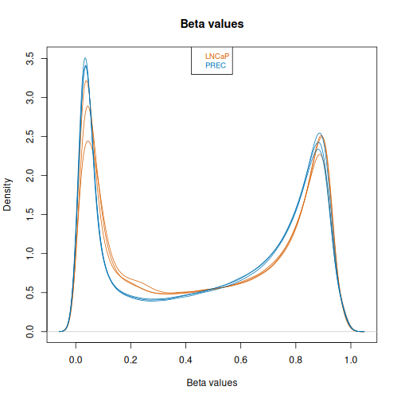
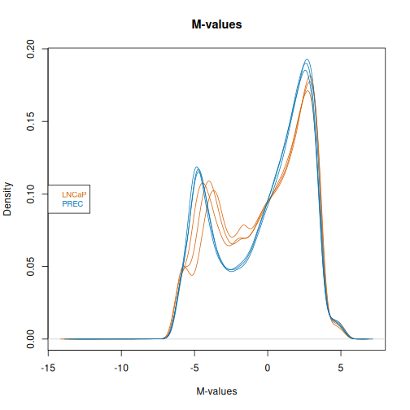
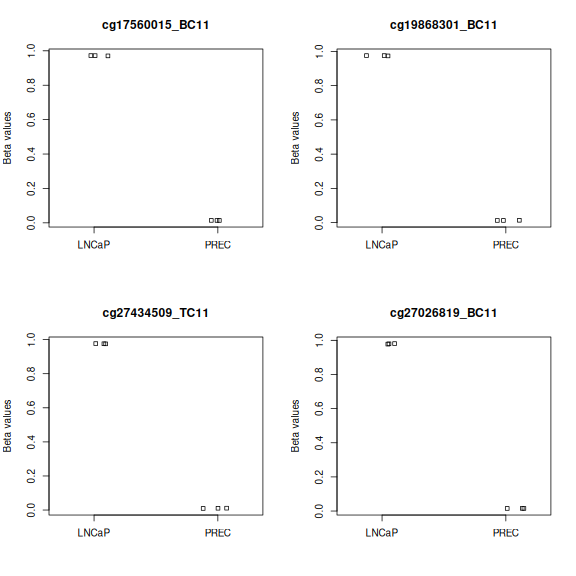
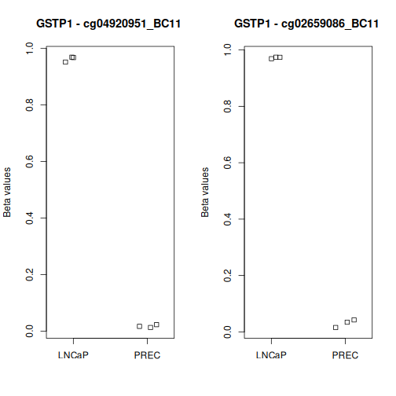
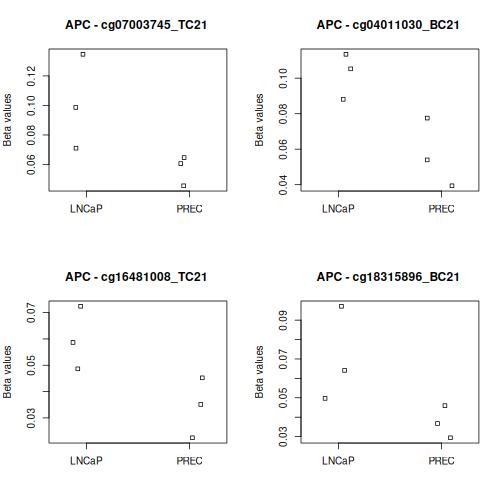
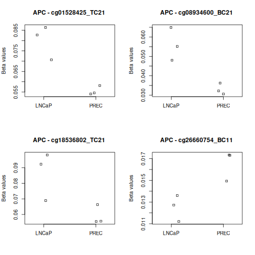
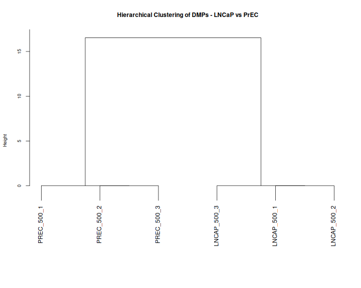
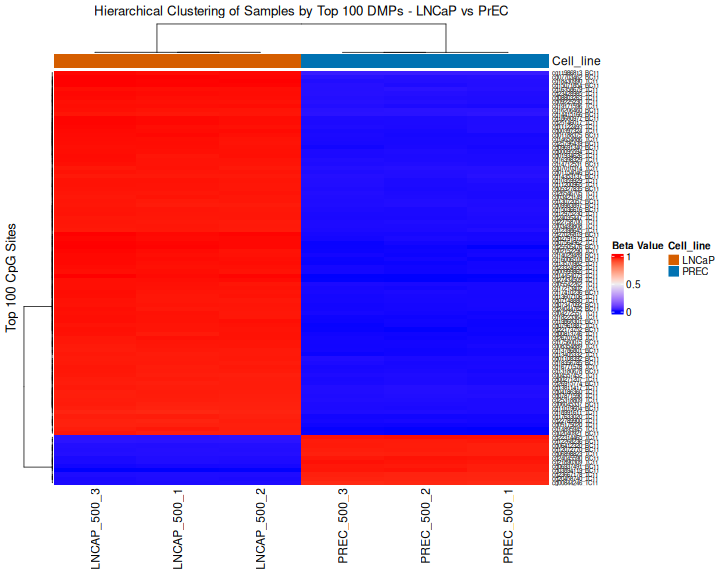
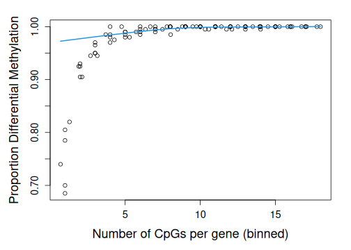

Differentially methylated probes with limma
Last updated on 2026-10-23 | Edit this page
Estimated time: 55 minutes
Overview
Questions
- How do we compare methylation at individual probes between groups?
- How do we define a design matrix and a contrast for limma?
- How do we interpret and visualise differentially methylated probes?
Objectives
- Extract M-values and beta values from the filtered methylation data
- Define a design matrix and contrast for LNCaP versus PrEC
- Fit probe-wise models and identify differentially methylated probes with limma
- Interpret effect direction, adjusted p-values and beta-value differences
- Plot individual probes and cluster samples using the top-ranked probes
A differentially methylated probe (DMP) measures a difference in methylation at an individual probe between the groups of interest. We use M-values for statistical testing and beta values to visualise methylation levels.
Load filtered methylation data
Start from the previously saved normalised and filtered objects. The annotation must match our EPICv2 array and hg38 genome build.
R
library(minfi)
library(limma)
library(IlluminaHumanMethylationEPICv2anno.20a1.hg38)
library(ComplexHeatmap)
library(dplyr)
library(missMethyl)
mSetFnFlt <- readRDS(file="data/processed/normalised-filtered.rds")
targets <- readRDS(file = "data/processed/targets.rds")
epic <- getAnnotation(IlluminaHumanMethylationEPICv2anno.20a1.hg38)
Global M-values and beta values
Here we look at the global M and Beta values across all probes. Beta values near zero indicate low methylation; values near one indicate high methylation. M-values are on a log-ratio scale. Inspect their distributions before fitting the model.
R
cols_type <- c(LNCaP = "#D55E00", PREC = "#0072B2")
mVals <- getM(mSetFnFlt)
head(mVals)
OUTPUT
LNCAP_500_1 LNCAP_500_2 LNCAP_500_3 PREC_500_1 PREC_500_2
cg00002271_BC21 1.178715 1.134474 1.056699 0.6097371 0.80528339
cg00004581_TC21 1.552773 1.575081 1.478572 -0.8050771 -0.88887358
cg00005473_TC21 2.278193 2.415690 2.140785 3.3022608 3.16836385
cg00005474_TC21 2.948006 3.189838 2.897238 3.1421097 3.26114640
cg09499020_BC21 -1.857919 -1.581463 -1.736861 -1.7552312 -1.97841104
cg16535257_BC21 -3.538559 -3.506573 -3.697958 -0.1119214 0.06977926
PREC_500_3
cg00002271_BC21 0.74405791
cg00004581_TC21 -0.68770543
cg00005473_TC21 2.90294648
cg00005474_TC21 3.54741234
cg09499020_BC21 -1.68665222
cg16535257_BC21 0.05104223R
bVals <- getBeta(mSetFnFlt)
head(bVals)
OUTPUT
LNCAP_500_1 LNCAP_500_2 LNCAP_500_3 PREC_500_1 PREC_500_2
cg00002271_BC21 0.69360405 0.68704866 0.67534222 0.6041142 0.6360313
cg00004581_TC21 0.74579314 0.74871353 0.73591981 0.3640018 0.3506644
cg00005473_TC21 0.82908025 0.84216541 0.81515782 0.9079580 0.8999026
cg00005474_TC21 0.88527926 0.90123541 0.88165664 0.8982514 0.9055485
cg09499020_BC21 0.21622345 0.25045506 0.23078215 0.2285294 0.2024050
cg16535257_BC21 0.07923824 0.08087101 0.07154277 0.4806152 0.5120895
PREC_500_3
cg00002271_BC21 0.6261515
cg00004581_TC21 0.3830361
cg00005473_TC21 0.8820689
cg00005474_TC21 0.9212083
cg09499020_BC21 0.2370180
cg16535257_BC21 0.5088440R
densityPlot(bVals, sampGroups=targets$Type, main="Beta values",
legend=FALSE, xlab="Beta values", pal = cols_type[levels(factor(targets$Type))])
legend("top", legend = levels(factor(targets$Type)),
text.col=cols_type[levels(factor(targets$Type))], cex = 0.8)

R
densityPlot(mVals, sampGroups=targets$Type, main="M-values",
legend=FALSE, xlab="M-values", pal = cols_type[levels(factor(targets$Type))])
legend("left", legend = levels(factor(targets$Type)),
text.col=cols_type[levels(factor(targets$Type))], cex = 0.8)

Define the design matrix and contrasts
We compare LNCaP with PrEC. ~0+sampleType creates a
column for each cell type, without an intercept; each coefficient
represents that group’s mean M-value. Inspect the design to check that
the sample labels are assigned correctly.
R
sampleType <- factor(targets$Type)
design <- model.matrix(~0+sampleType, data=targets)
colnames(design) <- levels(sampleType)
design
OUTPUT
LNCaP PREC
1 1 0
2 1 0
3 1 0
4 0 1
5 0 1
6 0 1
attr(,"assign")
[1] 1 1
attr(,"contrasts")
attr(,"contrasts")$sampleType
[1] "contr.treatment"Technical replicates versus biological replicates
For this example, we compare one prostate cancer cell line (LNCaP) with one normal prostate epithelial culture (PrEC), with three technical replicate arrays for each. These are repeated measurements of the same biological material, rather than three independent biological samples per group.
In a typical research study, we would use biological replicates: e.g. tumours from different patients with the same disease type, in each comparison group. These samples capture biological variation between patients or tumours, which technical replicates alone cannot represent. Repeating measurements of one sample does not replace collecting independent biological samples.
For your own study, define the groups using the biological question
and account for the study design, including patient pairing where
appropriate. Multiple tumours from the same patient are related samples
and need that relationship accounted for in the analysis. See the
Blocking and Correlation section of the limma
User’s Guide to account for related samples using patient blocks and
duplicateCorrelation().
Fit models with limma
lmFit() fits a linear model at each probe. The contrast
LNCaP-PREC subtracts the PrEC mean M-value from the LNCaP
mean M-value. contrasts.fit() calculates this comparison,
and eBayes() moderates the variance estimates across
probes.
Positive coefficients indicate higher methylation in LNCaP; negative coefficients indicate higher methylation in PrEC. The summary counts probes with negative significant, non-significant and positive significant results at the default Benjamini–Hochberg adjusted p-value threshold of 0.05 (conventional choice is false dicovery rate 5%).
R
fit <- lmFit(mVals, design)
contMatrix <- makeContrasts(LNCaP-PREC,
levels=design)
contMatrix
OUTPUT
Contrasts
Levels LNCaP - PREC
LNCaP 1
PREC -1R
fit2 <- contrasts.fit(fit, contMatrix)
fit2 <- eBayes(fit2)
# Differentially methylated CpGs at FDR < 0.05
summary(decideTests(fit2))
OUTPUT
LNCaP - PREC
Down 298607
NotSig 284859
Up 269126Interpret and visualise differentially methylated probes
We create a results table containing all tested probes, ranked by evidence for differential methylation.
topTable() ranks probes by evidence for differential
methylation. In the table:
-
logFCis the difference in mean M-values for LNCaP minus PrEC -
P.Valueis the unadjusted p-value for that probe -
adj.P.Valaccounts for testing many probes using Benjamini–Hochberg adjustment -
Bis the log-odds of differential methylation under the fitted model -
deltaBetais the mean beta value in LNCaP minus the mean beta value in PrEC; positive values indicate higher methylation in LNCaP (the magnitude of methylation change)
We then plot the 4 top-ranked probes. These probes are only considered statistically significant if their adjusted p-values meet our FDR threshold.
The four plots show the top-ranked probes, which may or may not pass the FDR threshold. Check the adjusted p-values before describing them as significant.
R
# results table of top differentially methylated probes for this contrast
epicSub <- epic[match(rownames(mVals),epic$Name), ]
DMPs <- topTable(fit2, num=Inf, coef=1, genelist=epicSub)
# Mean beta-value difference: LNCaP minus PrEC
deltaBeta <- rowMeans(bVals[, sampleType == "LNCaP", drop=FALSE]) -
rowMeans(bVals[, sampleType == "PREC", drop=FALSE])
DMPs$deltaBeta <- deltaBeta[rownames(DMPs)]
# head(DMPs)
# Plot the four top-ranked CpGs
par(mfrow=c(2,2))
for (cpg in rownames(DMPs)[1:4]) {
plotCpg(bVals, cpg=cpg, pheno=targets$Type, ylab="Beta values")
}

R
dir.create("data/output", recursive = TRUE, showWarnings = FALSE)
write.table(DMPs, file="data/output/DMPs_epicv2_LNCaP_vs_PREC.csv", sep=",", row.names=FALSE)
We can also extract only the statistically significant probes, retaining their statistics, annotation and beta-value differences.
R
sigDMPs <- DMPs[DMPs$adj.P.Val < 0.05, ]
nrow(sigDMPs)
OUTPUT
[1] 567733R
# head(sigDMPs)
Interpret the contrast
- A probe has
logFC = -2andadj.P.Val = 0.01. Which cell type has higher methylation? - Does this mean methylation differs by two percentage points?
- What would happen to the sign and significance if we used
PREC-LNCaP?
- PrEC has higher mean M-values for this probe.
- No.
logFCis an M-value difference. InspectdeltaBetaand the beta-value plot for an interpretable effect size. - The coefficient and effect direction reverse. The two-sided p-values and adjusted p-values remain the same.
Plot specific genes of interest
We explore GSTP1 and APC, genes with documented promoter methylation in prostate cancer models. See the studies of GSTP1 in LNCaP and LNCaP versus PrEC methylation.
We can plot the methylation profiles of specific genes of interest -
To do this, we find any relevant probes relating to the target gene by
searching the reference (epic dataframe) - Note: We are typically most
interested in probes relating to the promoter region of genes.
Therefore, for genes that have a large number of probes, you may choose
to only focus on the probes relating to the promoter region. We can
filter probes in this region by refining our search to CpG ‘islands’
that are typically located in or near promoter regions (this information
can be found in the Relation_to_Island column). For a more
precise search, we can also filter probes in the promoter region by
refining our search to probes located within 200 base pairs
(TSS200) and 1500 base pairs (TSS1500)
upstream of the transcriptional start site (TSS) - both of which are
typically considered parts of the promoter region (this information can
be found in the UCSC_RefGene_Group column). You will need
to play around with these parameters to suit your analysis of
interest.
R
# GSTP1 - search for related probes
applicable_probes <- as.data.frame(epicSub) %>%
filter(grepl("\\bGSTP1\\b", UCSC_RefGene_Name))
applicable_probes %>%
dplyr::select(chr, pos, strand, Name, Relation_to_Island,
UCSC_RefGene_Group, UCSC_RefGene_Name)
OUTPUT
chr pos strand Name Relation_to_Island
cg25135322_TC21 chr11 67582682 + cg25135322_TC21 Shore
cg23725454_TC21 chr11 67582724 - cg23725454_TC21 Shore
cg25866895_TC21 chr11 67582855 + cg25866895_TC21 Shore
cg05244766_BC21 chr11 67583028 + cg05244766_BC21 Shore
cg14921275_TC21 chr11 67583040 + cg14921275_TC21 Shore
cg02659086_BC11 chr11 67583505 + cg02659086_BC11 Island
cg04920951_BC11 chr11 67583800 + cg04920951_BC11 Island
cg09038676_BC21 chr11 67584137 - cg09038676_BC21 Island
cg22224704_BC21 chr11 67584570 + cg22224704_BC21 Shore
cg07493922_TC21 chr11 67584751 - cg07493922_TC21 Shore
UCSC_RefGene_Group UCSC_RefGene_Name
cg25135322_TC21 TSS1500 GSTP1
cg23725454_TC21 TSS1500 GSTP1
cg25866895_TC21 TSS1500 GSTP1
cg05244766_BC21 TSS1500 GSTP1
cg14921275_TC21 TSS1500 GSTP1
cg02659086_BC11 TSS1500 GSTP1
cg04920951_BC11 TSS200 GSTP1
cg09038676_BC21 exon_2 GSTP1
cg22224704_BC21 exon_3 GSTP1
cg07493922_TC21 exon_4 GSTP1R
# Two GSTP1 probes are promoter-associated and within a CpG island.
# Another five probes are promoter-associated (TSS1500) but lie in an island shore.
# Plot the two promoter-associated CpG-island probes for GSTP1
geneMap <- c("cg04920951_BC11" = "GSTP1",
"cg02659086_BC11" = "GSTP1")
par(mfrow=c(1,2))
for (probeID in names(geneMap)) {
plotCpg(bVals, cpg=probeID, pheno=targets$Type,
mainPrefix=paste(geneMap[probeID], "-"),
ylab="Beta values")
}

R
# APC - search for related probes
applicable_probes <- as.data.frame(epicSub) %>%
filter(grepl("\\bAPC\\b", UCSC_RefGene_Name))
applicable_probes %>%
dplyr::select(chr, pos, strand, Name, Relation_to_Island,
UCSC_RefGene_Group, UCSC_RefGene_Name)
OUTPUT
chr pos strand Name Relation_to_Island
cg19115695_BC21 chr5 112706150 - cg19115695_BC21 Shore
cg27062904_TC21 chr5 112706172 - cg27062904_TC21 Shore
cg00190738_BC21 chr5 112706953 - cg00190738_BC21 Shore
cg16110711_TC21 chr5 112707154 - cg16110711_TC21 Shore
cg16451027_BC21 chr5 112707162 + cg16451027_BC21 Shore
cg27379240_TC11 chr5 112707222 - cg27379240_TC11 Shore
cg11057897_TC21 chr5 112707269 - cg11057897_TC21 Shore
cg07003745_TC21 chr5 112707383 + cg07003745_TC21 Island
cg04011030_BC21 chr5 112707408 + cg04011030_BC21 Island
cg16481008_TC21 chr5 112707420 - cg16481008_TC21 Island
cg18315896_BC21 chr5 112707434 - cg18315896_BC21 Island
cg01528425_TC21 chr5 112707440 - cg01528425_TC21 Island
cg08934600_BC21 chr5 112707461 - cg08934600_BC21 Island
cg18536802_TC21 chr5 112707491 + cg18536802_TC21 Island
cg26660754_BC11 chr5 112707497 + cg26660754_BC11 Island
cg08512345_BC11 chr5 112707578 + cg08512345_BC11 Island
cg15075901_TC21 chr5 112736861 - cg15075901_TC21 OpenSea
cg08249692_TC21 chr5 112737229 - cg08249692_TC21 OpenSea
cg17655851_TC21 chr5 112737552 + cg17655851_TC21 OpenSea
cg14511739_TC11 chr5 112737676 + cg14511739_TC11 OpenSea
cg22035501_BC11 chr5 112737701 + cg22035501_BC11 OpenSea
cg11613015_TC11 chr5 112737709 + cg11613015_TC11 OpenSea
cg14479889_TC21 chr5 112737729 + cg14479889_TC21 OpenSea
cg16970232_TC21 chr5 112737736 + cg16970232_TC21 OpenSea
cg03667968_TC11 chr5 112737741 + cg03667968_TC11 OpenSea
cg20311501_BC21 chr5 112737805 + cg20311501_BC21 OpenSea
cg23938220_TC11 chr5 112737841 - cg23938220_TC11 OpenSea
cg02511809_TC11 chr5 112737847 - cg02511809_TC11 OpenSea
cg21634602_BC21 chr5 112737873 + cg21634602_BC21 OpenSea
cg08389418_BC21 chr5 112737910 + cg08389418_BC21 OpenSea
cg12534150_TC11 chr5 112737916 + cg12534150_TC11 OpenSea
cg21898405_BC21 chr5 112754960 - cg21898405_BC21 OpenSea
cg08389637_BC21 chr5 112767248 + cg08389637_BC21 OpenSea
cg08389726_TC21 chr5 112780854 - cg08389726_TC21 OpenSea
cg08389823_BC21 chr5 112792494 - cg08389823_BC21 OpenSea
cg08389988_TC21 chr5 112815507 - cg08389988_TC21 OpenSea
cg08390027_BC21 chr5 112819274 + cg08390027_BC21 OpenSea
cg04595172_TC21 chr5 112827194 - cg04595172_TC21 OpenSea
cg08390147_TC21 chr5 112834968 - cg08390147_TC21 OpenSea
cg08390240_TC21 chr5 112844091 + cg08390240_TC21 OpenSea
UCSC_RefGene_Group
cg19115695_BC21 TSS1500;TSS1500;TSS1500;TSS1500
cg27062904_TC21 TSS1500;TSS1500;TSS1500;TSS1500
cg00190738_BC21 TSS1500;TSS1500;TSS1500;TSS1500
cg16110711_TC21 TSS1500;TSS1500;TSS1500;TSS1500
cg16451027_BC21 TSS1500;TSS1500;TSS1500;TSS1500
cg27379240_TC11 TSS1500;TSS1500;TSS1500;TSS1500
cg11057897_TC21 TSS1500;TSS1500;TSS1500;TSS1500
cg07003745_TC21 TSS200;TSS200;TSS200;TSS200
cg04011030_BC21 TSS200;TSS200;TSS200;TSS200
cg16481008_TC21 TSS200;TSS200;TSS200;TSS200
cg18315896_BC21 TSS200;TSS200;TSS200;TSS200
cg01528425_TC21 TSS200;TSS200;TSS200;TSS200
cg08934600_BC21 TSS200;TSS200;TSS200;TSS200
cg18536802_TC21 TSS200;TSS200;TSS200;TSS200
cg26660754_BC11 TSS200;TSS200;TSS200;TSS200
cg08512345_BC11 5UTR;exon_1;5UTR;exon_1;5UTR;exon_1;5UTR;exon_1
cg15075901_TC21 TSS1500;TSS1500;TSS1500;TSS1500;TSS1500;TSS1500;TSS1500;TSS1500;TSS1500;TSS1500;TSS1500
cg08249692_TC21 TSS1500;TSS1500;TSS1500;TSS1500;TSS1500;TSS1500;TSS1500;TSS1500;TSS1500;TSS1500;TSS1500
cg17655851_TC21 TSS1500;TSS1500;TSS1500;TSS1500;TSS1500;TSS1500;TSS1500;TSS1500;TSS1500;TSS1500;TSS1500
cg14511739_TC11 TSS1500;TSS1500;TSS1500;TSS1500;TSS1500;TSS1500;TSS1500;TSS1500;TSS1500;TSS1500;TSS1500
cg22035501_BC11 TSS200;TSS200;TSS200;TSS200;TSS200;TSS200;TSS200;TSS200;TSS200;TSS200;TSS200
cg11613015_TC11 TSS200;TSS200;TSS200;TSS200;TSS200;TSS200;TSS200;TSS200;TSS200;TSS200;TSS200
cg14479889_TC21 TSS200;TSS200;TSS200;TSS200;TSS200;TSS200;TSS200;TSS200;TSS200;TSS200;TSS200
cg16970232_TC21 TSS200;TSS200;TSS200;TSS200;TSS200;TSS200;TSS200;TSS200;TSS200;TSS200;TSS200
cg03667968_TC11 TSS200;TSS200;TSS200;TSS200;TSS200;TSS200;TSS200;TSS200;TSS200;TSS200;TSS200
cg20311501_BC21 TSS200;TSS200;TSS200;TSS200;TSS200;TSS200;TSS200;TSS200;TSS200;TSS200;TSS200
cg23938220_TC11 TSS200;TSS200;TSS200;TSS200;TSS200;TSS200;TSS200;TSS200;TSS200;TSS200;TSS200
cg02511809_TC11 TSS200;TSS200;TSS200;TSS200;TSS200;TSS200;TSS200;TSS200;TSS200;TSS200;TSS200
cg21634602_BC21 TSS200;TSS200;TSS200;TSS200;TSS200;TSS200;TSS200;TSS200;TSS200;TSS200;TSS200
cg08389418_BC21 5UTR;exon_1;5UTR;exon_1;5UTR;exon_1;5UTR;exon_1;5UTR;exon_1;5UTR;exon_1;5UTR;exon_1;5UTR;exon_1;5UTR;exon_1;5UTR;exon_1;5UTR;exon_1
cg12534150_TC11 5UTR;exon_1;5UTR;exon_1;5UTR;exon_1;5UTR;exon_1;5UTR;exon_1;5UTR;exon_1;5UTR;exon_1;5UTR;exon_1;5UTR;exon_1;5UTR;exon_1;5UTR;exon_1
cg21898405_BC21 exon_2;exon_3;exon_2;exon_2;exon_2;exon_2;5UTR;exon_2
cg08389637_BC21 exon_4;exon_5;exon_3;exon_4;exon_4;exon_3;exon_4;exon_4;exon_3;exon_3;exon_3;exon_4;exon_4;exon_3;5UTR;exon_4
cg08389726_TC21 exon_6;exon_7;exon_5;exon_6;exon_6;exon_5;exon_6;exon_6;exon_5;exon_5;exon_5;exon_6;exon_6;exon_5;5UTR;exon_6
cg08389823_BC21 exon_7;exon_8;exon_7;exon_7;exon_6;exon_7;exon_6;exon_6;exon_6;exon_7;exon_7;exon_6;5UTR;exon_7
cg08389988_TC21 exon_9;exon_10;exon_7;exon_9;exon_9;exon_8;exon_9;exon_8;exon_8;exon_8;exon_8;exon_9;exon_9;exon_8;5UTR;exon_10
cg08390027_BC21 exon_10;exon_11;exon_8;exon_10;exon_10;exon_9;exon_10;exon_9;exon_9;exon_9;exon_9;exon_10;exon_10;exon_9;exon_11
cg04595172_TC21 exon_12;exon_13;exon_10;exon_12;exon_13;exon_11;exon_12;exon_11;exon_12;exon_11;exon_11;exon_12;exon_12;exon_11;exon_13
cg08390147_TC21 exon_15;exon_16;exon_13;exon_15;exon_16;exon_14;exon_15;exon_14;exon_15;exon_14;exon_14;exon_15;exon_15;exon_14;exon_16
cg08390240_TC21 exon_16;exon_17;exon_14;exon_16;exon_17;exon_15;exon_16;exon_15;exon_16;exon_15;exon_15;exon_16;exon_16;exon_15;exon_17
UCSC_RefGene_Name
cg19115695_BC21 APC;APC;APC;APC
cg27062904_TC21 APC;APC;APC;APC
cg00190738_BC21 APC;APC;APC;APC
cg16110711_TC21 APC;APC;APC;APC
cg16451027_BC21 APC;APC;APC;APC
cg27379240_TC11 APC;APC;APC;APC
cg11057897_TC21 APC;APC;APC;APC
cg07003745_TC21 APC;APC;APC;APC
cg04011030_BC21 APC;APC;APC;APC
cg16481008_TC21 APC;APC;APC;APC
cg18315896_BC21 APC;APC;APC;APC
cg01528425_TC21 APC;APC;APC;APC
cg08934600_BC21 APC;APC;APC;APC
cg18536802_TC21 APC;APC;APC;APC
cg26660754_BC11 APC;APC;APC;APC
cg08512345_BC11 APC;APC;APC;APC;APC;APC;APC;APC
cg15075901_TC21 APC;APC;APC;APC;APC;APC;APC;APC;APC;APC;APC
cg08249692_TC21 APC;APC;APC;APC;APC;APC;APC;APC;APC;APC;APC
cg17655851_TC21 APC;APC;APC;APC;APC;APC;APC;APC;APC;APC;APC
cg14511739_TC11 APC;APC;APC;APC;APC;APC;APC;APC;APC;APC;APC
cg22035501_BC11 APC;APC;APC;APC;APC;APC;APC;APC;APC;APC;APC
cg11613015_TC11 APC;APC;APC;APC;APC;APC;APC;APC;APC;APC;APC
cg14479889_TC21 APC;APC;APC;APC;APC;APC;APC;APC;APC;APC;APC
cg16970232_TC21 APC;APC;APC;APC;APC;APC;APC;APC;APC;APC;APC
cg03667968_TC11 APC;APC;APC;APC;APC;APC;APC;APC;APC;APC;APC
cg20311501_BC21 APC;APC;APC;APC;APC;APC;APC;APC;APC;APC;APC
cg23938220_TC11 APC;APC;APC;APC;APC;APC;APC;APC;APC;APC;APC
cg02511809_TC11 APC;APC;APC;APC;APC;APC;APC;APC;APC;APC;APC
cg21634602_BC21 APC;APC;APC;APC;APC;APC;APC;APC;APC;APC;APC
cg08389418_BC21 APC;APC;APC;APC;APC;APC;APC;APC;APC;APC;APC;APC;APC;APC;APC;APC;APC;APC;APC;APC;APC;APC
cg12534150_TC11 APC;APC;APC;APC;APC;APC;APC;APC;APC;APC;APC;APC;APC;APC;APC;APC;APC;APC;APC;APC;APC;APC
cg21898405_BC21 APC;APC;APC;APC;APC;APC;APC;APC
cg08389637_BC21 APC;APC;APC;APC;APC;APC;APC;APC;APC;APC;APC;APC;APC;APC;APC;APC
cg08389726_TC21 APC;APC;APC;APC;APC;APC;APC;APC;APC;APC;APC;APC;APC;APC;APC;APC
cg08389823_BC21 APC;APC;APC;APC;APC;APC;APC;APC;APC;APC;APC;APC;APC;APC
cg08389988_TC21 APC;APC;APC;APC;APC;APC;APC;APC;APC;APC;APC;APC;APC;APC;APC;APC
cg08390027_BC21 APC;APC;APC;APC;APC;APC;APC;APC;APC;APC;APC;APC;APC;APC;APC
cg04595172_TC21 APC;APC;APC;APC;APC;APC;APC;APC;APC;APC;APC;APC;APC;APC;APC
cg08390147_TC21 APC;APC;APC;APC;APC;APC;APC;APC;APC;APC;APC;APC;APC;APC;APC
cg08390240_TC21 APC;APC;APC;APC;APC;APC;APC;APC;APC;APC;APC;APC;APC;APC;APCR
# Eight APC probes are both promoter-associated (TSS200) and within a CpG island.
# Plot the eight promoter-associated CpG-island probes for APC
geneMap <- c("cg07003745_TC21" = "APC",
"cg04011030_BC21" = "APC",
"cg16481008_TC21" = "APC",
"cg18315896_BC21" = "APC",
"cg01528425_TC21" = "APC",
"cg08934600_BC21" = "APC",
"cg18536802_TC21" = "APC",
"cg26660754_BC11" = "APC")
par(mfrow=c(2,2))
for (probeID in names(geneMap)) {
plotCpg(bVals, cpg=probeID, pheno=targets$Type,
mainPrefix=paste(geneMap[probeID], "-"),
ylab="Beta values")
}


Hierarchical clustering of the top CpG probes
We will use the top 100 most differentiated CpG sites (this can be changed depending on your preference). Rows in the heatmap represent probes and columns represent samples. The code uses Euclidean distances and Ward’s clustering method, as in the example.
R
# extract top 100 DMPs
top_DMPs <- DMPs[1:100, ]
selected_bVals <- bVals[rownames(bVals) %in% rownames(top_DMPs), ]
# computing the distance matrix using Euclidean distance
dist_matrix <- dist(t(selected_bVals), method = "euclidean")
# Performing hierarchical clustering using Ward's method
hc <- hclust(dist_matrix, method = "ward.D2")
# Plot dendrogram
plot(hc, main = "Hierarchical Clustering of DMPs - LNCaP vs PrEC", sub = "", xlab = "", cex.lab = 0.75, cex.axis = 0.75, cex.main = 1)

R
# Plot heatmap
sample_annotation <- HeatmapAnnotation(
Cell_line = targets$Type,
col = list(Cell_line = cols_type)
)
Heatmap(selected_bVals,
top_annotation = sample_annotation,
cluster_rows = TRUE,
cluster_columns = TRUE,
name = "Beta Value",
column_title = "Hierarchical Clustering of Samples by Top 100 DMPs - LNCaP vs PrEC",
row_title = "Top 100 CpG Sites",
clustering_method_rows = "ward.D2",
clustering_method_columns = "ward.D2",
row_names_gp = grid::gpar(fontsize = 6)
)

Gene set enrichment and gene ontology testing
We can ask whether genes associated with significant CpG probes are
enriched for particular biological processes (GO terms)
or KEGG pathways. gometh() accounts for
differences in the number of probes associated with each gene. We use
probes with adj.P.Val < 0.05, matching our false
discovery rate of 5%. All tested probes will be used as the
background.
The bias plots show how the probability of identifying a significant
CpG varies with the number of probes associated with a gene. In the
enrichment tables, inspect FDR to assess significance after
testing many gene sets; the top ten terms are not necessarily
significant.
Enrichment indicates that genes associated with differential methylation are overrepresented in a gene set. It does not establish that a pathway is activated or inhibited, or that gene expression has changed. This analysis combines probes with positive and negative methylation differences.
This code requires a version of missMethyl that supports
array.type="EPIC_V2". See the missMethyl
vignette for details, including recommendations for handling EPICv2
replicate probes that measure the same CpG site. It is recommended that
EPICv2 replicate probes are handelled before continuing with
differential methylation analysis. Replicate probes in our dataset were
collapsed in the previous lesson.
R
# Extract significant probes at 5% FDR.
sigCpGs <- DMPs$Name[DMPs$adj.P.Val < 0.05]
sigCpGs[1:10]
OUTPUT
[1] "cg17560015_BC11" "cg19868301_BC11" "cg27434509_TC11" "cg27026819_BC11"
[5] "cg05175020_TC11" "cg13786801_BC11" "cg23324953_TC11" "cg00095594_TC11"
[9] "cg00999865_TC11" "cg17213402_TC11"R
length(sigCpGs)
OUTPUT
[1] 567733R
# Background: all probes tested in this comparison.
allCpGs <- DMPs$Name
length(allCpGs)
OUTPUT
[1] 852592R
# GO enrichment analysis
gst <- gometh(sig.cpg=sigCpGs, all.cpg=allCpGs,
array.type="EPIC_V2", collection="GO", plot.bias=TRUE)

R
print(topGSA(gst, number=10))
OUTPUT
ONTOLOGY TERM N DE P.DE
GO:0003674 MF molecular_function 17056 16921 5.399288e-82
GO:0005488 MF binding 15677 15565 1.685215e-77
GO:0005515 MF protein binding 13784 13701 9.445045e-73
GO:0110165 CC cellular anatomical structure 17724 17540 8.954903e-58
GO:0005575 CC cellular_component 17998 17801 1.243279e-53
GO:0005737 CC cytoplasm 11149 11084 1.406102e-53
GO:0008150 BP biological_process 17009 16826 2.567379e-48
GO:0005622 CC intracellular anatomical structure 14469 14336 4.501325e-46
GO:0009987 BP cellular process 16566 16388 1.496443e-45
GO:0065007 BP biological regulation 11562 11474 9.332261e-42
FDR
GO:0003674 1.143029e-77
GO:0005488 1.783800e-73
GO:0005515 6.665054e-69
GO:0110165 4.739382e-54
GO:0005575 4.961197e-50
GO:0005737 4.961197e-50
GO:0008150 7.764488e-45
GO:0005622 1.191163e-42
GO:0009987 3.519967e-42
GO:0065007 1.975640e-38R
# KEGG enrichment analysis
gst.kegg <- gometh(sig.cpg=sigCpGs, all.cpg=allCpGs,
array.type="EPIC_V2", collection="KEGG", plot.bias=TRUE)
print(topGSA(gst.kegg, number=10))
OUTPUT
Description N DE P.DE FDR
hsa01100 Metabolic pathways 1489 1480 1.054744e-05 0.003923647
hsa05200 Pathways in cancer 509 509 5.750207e-05 0.010695386
hsa05165 Human papillomavirus infection 321 321 2.157508e-03 0.267531017
hsa04010 MAPK signaling pathway 289 289 4.226717e-03 0.393084656
hsa04151 PI3K-Akt signaling pathway 343 342 9.266902e-03 0.539733492
hsa04142 Lysosome biogenesis 239 239 1.072015e-02 0.539733492
hsa04014 Ras signaling pathway 228 228 1.328740e-02 0.539733492
hsa04820 Cytoskeleton in muscle cells 225 225 1.412028e-02 0.539733492
hsa04810 Regulation of actin cytoskeleton 222 222 1.500577e-02 0.539733492
hsa05163 Human cytomegalovirus infection 217 217 1.500640e-02 0.539733492- Use M-values for probe-wise modelling and beta values to describe methylation levels.
- The design encodes the groups; the contrast defines the comparison and effect direction.
- Investigate genes of interest by searching the annotation and selecting probes relevant to the biological question, such as promoter-associated CpG-island probes.
- Plot individual probes to compare methylation levels and variation within each group.
- Use hierarchical clustering and an annotated heatmap of the top-ranked probes to visualise methylation patterns and sample relationships.
- Explore GO and KEGG enrichment using significant probes and all tested probes as the background.